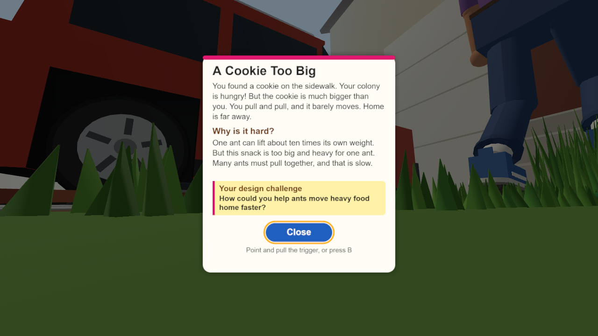

Real views of the world with a test card, captured on a computer (the headset shows it to both eyes) · project files not changed yet
① Walk close — a pink label appears below your view. Press A, or point the laser at the ring and pull the trigger

② The card opens in front of you — big text, the world dims, walking stops. Point at Close and pull the trigger, or press B
Controller buttons
A/X
Read the message (when the pink label shows)
B/Y
Close the card
Trigger
Open the ring the laser points at · press Close
Sticks
Walking and turning come in stage 2
What changes / what stays
Headset only
· The card opens as a panel about 1 m in front of you, not a box on the screen. Same text: title, problem, Why is it hard, Words to know, Your design challenge (problems.js unchanged)
· It stays where it opened, so it does not follow your head (less motion sickness). Opening it again puts it in front of you again
· A pink label below your view replaces the "Read the message" button (shown within 400 m, same as now)
· A short laser comes from each controller. Rings hide while a card is open
· Note: the mini map and title box are screen boxes too, so they do not show in the headset (left as is this stage)
Stays the same: the computer view (card box, Read button, keyboard and mouse), card text, walking speed, place positions
Devices: Quest 2, Quest 3 and Quest 3S (same browser, same buttons)
How it is checked: simulated headset and controller input on the computer, then one real check by the teacher on a Quest at the GitHub Pages address